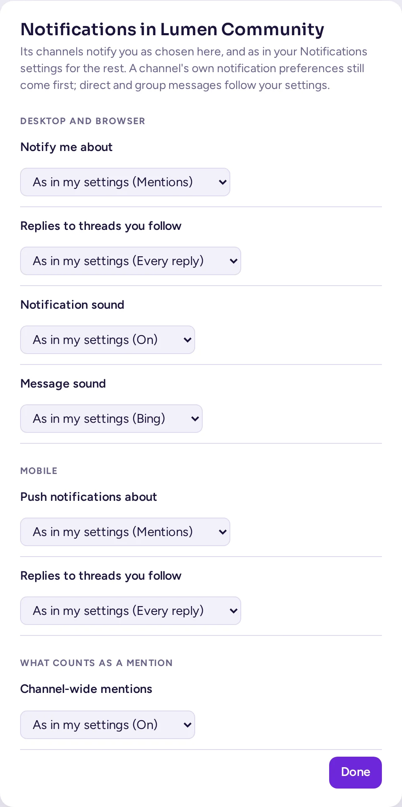
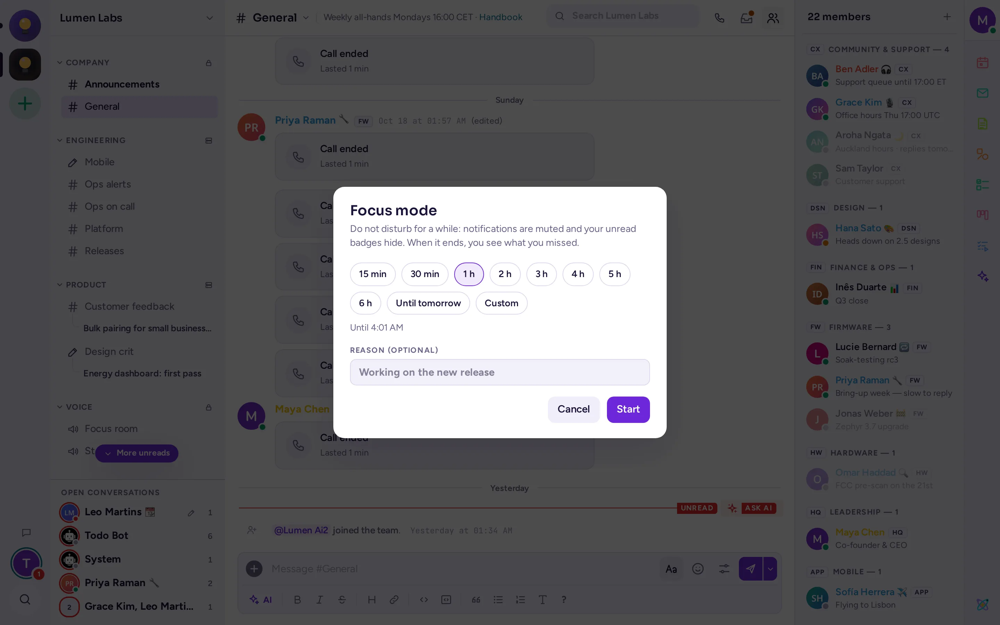

اعلانها و وضعیت
انتخاب آنچه، کجا و چه زمانی به شما میرسد: اعلانهای دسکتاپ، موبایل و ایمیل، صداها، کلمات کلیدی، تنظیمات کانالبهکانال و وضعیت شما، از جمله حالت مزاحم نشوید.
چه چیزی به شما اعلان میدهد
بهطور پیشفرض، Antimatter در موارد زیر به شما اعلان میدهد:
- پیامهایی که با نام کاربری شما به شما اشاره میکنند، مانند
@maya؛ - پیامهای مستقیم و گروهی؛
@channel،@allو@hereدر کانالهایی که عضو آنها هستید؛- پاسخهای جدید در رشتههایی که آنها را دنبال میکنید.
سایر پیامهای جدید به شما اعلان نمیدهند: آنها نام کانالشان را در نوار کناری پررنگ میکنند. در ریل جامعه، نقطه روی یک جامعه به معنای پیامهای خواندهنشده است و عدد، تعداد اشارههای شما را نشان میدهد. عنوان و آیکون تب مرورگر نیز هنگام وجود پیامهای خواندهنشده و اشارهها، این موضوع را نشان میدهند.
وضعیت شما این را تغییر میدهد: وقتی در حالت مزاحم نشوید یا حالت تمرکز هستید، هیچ اعلانی دریافت نمیکنید، حتی پیامهای فوری و اعلانهای مداوم آنها هم به شما نمیرسند. کانالهای بیصدا شده نیز هرگز به شما اعلان نمیدهند.
اعلانهای دسکتاپ و مرورگر
برای اینکه Antimatter اعلانها را روی رایانه شما نمایش دهد، مرورگر شما باید به آن اجازه دهد. وقتی مرورگر میپرسد که آیا این وبسایت میتواند اعلان نمایش دهد یا خیر، گزینه اجازه را انتخاب کنید. اگر قبلاً رد کردهاید، در تنظیمات وبسایتهای مرورگر خود، اعلانها را برای آدرس Antimatter خود مجاز کنید. برنامه دسکتاپ بدون این مرحله اعلانها را نمایش میدهد.
برای انتخاب آنچه به شما اعلان میدهد:
- مسیر تنظیمات › اعلانها را باز کنید: روی تصویر خود در گوشه بالا سمت راست کلیک کنید، مشخصات و تنظیمات را انتخاب کنید، سپس اعلانها را بزنید. اینها تنظیمات پیشفرض شما برای پیامهای مستقیم و گروهی هستند؛ منوی تنظیمات اعلان در منوی جامعه (Community)، تنظیمات اعلان همان جامعه را باز میکند (به بخش پایین مراجعه کنید).
- زیر بخش دسکتاپ و مرورگر، گزینه اعلان برای را روی همه پیامهای جدید، اشارهها (پیشفرض؛ پیامهای مستقیم و گروهی نیز بهعنوان اشاره در نظر گرفته میشوند) یا هیچچیز تنظیم کنید.
- پاسخها در رشتههایی که دنبال میکنید بهطور پیشفرض فعال است: شما از هر پاسخی در آن رشتهها مطلع میشوید. اگر آن را غیرفعال کنید، فقط زمانی اعلان میگیرید که در آنجا به شما اشاره شود.
- صدای اعلان را روشن یا خاموش کنید و صدای پیام را انتخاب کنید. برای شنیدن آن روی پخش کلیک کنید.
- زنگ مکالمهٔ ورودی را روشن یا خاموش کنید و برای مکالمات در پیامهای مستقیم، صدای زنگ را انتخاب کنید.
تغییرات بهمحض انجام ذخیره میشوند. برای اطمینان از کارکرد صحیح همهچیز، در پایین صفحه روی ارسال اعلان آزمایشی کلیک کنید: باید به دسکتاپ و دستگاههای شما برسد.

چه چیزی بهعنوان اشاره محسوب میشود
در تنظیمات › اعلانها، زیر بخش چه چیزی بهعنوان اشاره در نظر گرفته میشود:
- نام کوچک من: همچنین به شما اطلاع میرساند وقتی کسی نام کوچک شما را بنویسد. نام کاربری شما همیشه در نظر گرفته میشود.
- اشارههای کل کانال: برای
@channel،@allو@hereاعلان بگیرید یا نگیرید. - کلیدواژههایی که به من اعلان میفرستند: کلماتی که مانند اشاره به شما اعلان میفرستند، مانند نام یک پروژه. یک کلمه تایپ کنید و Enter را بزنید. این کلمات به حروف بزرگ و کوچک حساس نیستند.
- کلیدواژههایی که فقط برجسته میشوند: کلماتی که در پیامها برجسته میشوند، بدون اینکه به شما اعلان بفرستند.
- دنبال کردن رشتههایی که در آنها با @channel به من اشاره شده است: یک اشاره کلی کانال در یک رشته باعث میشود آن را دنبال کنید.
اعلانهای موبایل
اگر از برنامه موبایل استفاده میکنید و سرور شما اعلانهای push ارسال میکند، در تنظیمات › اعلانها یک بخش موبایل وجود دارد:
- اعلانهای push برای: همه، اشارهها یا هیچچیز.
- ارسال وقتی وضعیت من این است: آنلاین، غایب یا آفلاین (پیشفرض)، غایب یا آفلاین یا فقط آفلاین. این وضعیت شما در برنامه دسکتاپ یا وب است: با گزینه غایب یا آفلاین، تلفن شما در حالی که در رایانه فعال هستید، ساکت میماند.
- پاسخها در رشتههایی که دنبال میکنید: در موبایل نیز برای هر پاسخی اعلان میگیرید.
اگر تلفن شما اصلاً اعلان نمیگیرد، از مدیر خود بخواهید بررسی کند: اعلانهای push باید روی سرور پیکربندی شده باشند. برنامه موبایل نیز تنظیمات اعلان مستقل خود را در بخش تنظیمات › اعلانها داخل برنامه دارد.
اعلانهای ایمیل
هنگامی که سرور شما ایمیل میفرستد، اعلان های ایمیل را در تنظیمات › اعلانها روشن کنید تا در صورت غیبت یا آفلاین بودن، برای اشارهها و پیامهای مستقیم ایمیل دریافت کنید. اگر مدیر شما اجازه دهد، با زمان ارسال میتوانید فوراً، هر ۱۵ دقیقه یا هر ساعت را انتخاب کنید تا چندین پیام را در یک ایمیل دریافت کنید.
اعلانها برای یک کانال
هر کانال یا مکالمه میتواند تنظیمات مستقلی داشته باشد که با تنظیمات کلی شما متفاوت است.
- منوی کانال را باز کنید (⋯ کنار نام آن در نوار کناری، یا روی آن راستکلیک کنید) و ترجیحات اعلان… را انتخاب کنید.
- در تنظیمات اعلان، مشخص کنید چه چیزی در رایانه شما اعلان میدهد: همه پیامهای جدید، فقط اشارهها، پیامهای مستقیم و کلمات کلیدی یا هیچچیز. گزینهای که با «(پیشفرض)» مشخص شده است، از تنظیمات کلی شما پیروی میکند.
- اعلانهای پاسخ رشته و صدا را برای این کانال انتخاب کنید.
- برای تلفن همراه، استفاده از همان تنظیمات اعلان رایانه را نگه دارید یا تنظیمات متفاوتی انتخاب کنید.
- زیر بیصدا کردن یا نادیده گرفتن، میتوانید نادیده گرفتن کانال را انتخاب کنید یا نادیده گرفتن اشارههای @channel، @here و @all را فقط برای این کانال فعال کنید.
- با انتخاب دنبال کردن همه رشتههای این کانال، شما هر رشته جدیدی را که در آن ایجاد شود دنبال میکنید تا پاسخهای آنها در رشتههای دنبالشده شما نمایش داده شوند.
- روی صرفه جویی کلیک کنید.
معرفی کانال، که در ابتدای پیامهای آن قرار دارد، همچنین یک دکمه اعلانها دارد که همان پنجره گفتگو را باز میکند.
اعلانها برای یک جامعه
هر جامعه میتواند تنظیمات اعلان مخصوص به خود داشته باشد که با تنظیمات عمومی شما متفاوت است: منوی آن را باز کنید و تنظیمات اعلان را انتخاب کنید. در این بخش میتوانید سطح اعلانها روی دسکتاپ و موبایل، پاسخهای رشتهها، صدا و نوع آن، ایمیل و اشارههای سراسری (Channel-wide mentions) را برای آن جامعه تنظیم کنید؛ هر کدام تا زمانی که تغییرشان ندهید، روی «همان تنظیمات من (...)» باقی میمانند؛ گزینه استفاده از تنظیمات من در همه جا آنها را بازنشانی میکند. اولویت با تنظیمات اعلان خود کانال است؛ پیامهای مستقیم و گروهی شما همیشه از تنظیمات عمومی پیروی میکنند.
بیصدا کردن یک کانال، دسته یا جامعه
یک کانال بیصدا هیچ اعلانی برای شما ارسال نمیکند و نشان خواندهنشده نشان نمیدهد. با این حال، اگر کسی در آن کانال به شما اشاره کند، هنوز نشان میبینید.
- یک کانال یا گفتگو: در منوی آن (روی نام کانال در بالای گفتگو کلیک کنید یا روی ⋯ در نوار کناری)، گزینه نادیده گرفتن کانال (یا بیصدا کردن گفتگو) را انتخاب کنید، سپس مدت زمان را مشخص کنید: برای ۱ ساعت، برای ۸ ساعت، برای ۲۴ ساعت، برای یک هفته یا تا زمانی که خودم لغو کنم. در کانال بیصدا شده، آیکون زنگی با خطی روی آن نمایش داده میشود. منو سپس زمان پایان بیصدا بودن و گزینه لغو نادیده گرفتن کانال را نشان میدهد.
- یک دسته: در گزینههای دسته، بیصدا کردن دسته را انتخاب کنید.
- کل تیم: بیصدا کردن تیم را در منوی تیم انتخاب کنید.
پنهان کردن کانالهای بیصدا در منوی جامعه، کانالهای بیصدا را از نوار کناری حذف میکند.
وضعیت شما
وضعیت شما به دیگران نشان میدهد که آیا در دسترس هستید یا خیر. این وضعیت به صورت یک نقطه روی عکس شما نمایش داده میشود. Antimatter شما را هنگام استفاده آنلاین و هنگام عدم استفاده غایب قرار میدهد؛ اما میتوانید آن را خودتان نیز تنظیم کنید:
- روی عکس خود در گوشه بالا سمت راست پنجره کلیک کنید.
- آنلاین، غایب، مزاحم نشوید یا نامرئی (شما آفلاین به نظر میرسید، اما همچنان میتوانید از Antimatter استفاده کنید) را انتخاب کنید.
دستورات /online، /away، /dnd و /offline همان کار را انجام میدهند.
مزاحم نشوید
مزاحم نشوید تمام اعلانها را بیصدا میکند. روی آن اشاره کنید تا مدت زمان را انتخاب کنید: برای ۱۵ دقیقه، برای ۱ ساعت، برای ۱ روز، برای ۱ هفته، برای همیشه یا تا زمان دلخواه… (یک تاریخ و زمان انتخاب کنید، سپس روی روشن کردن کلیک کنید). هنگام پایان، وضعیت شما به حالت عادی برمیگردد. افرادی که به شما پیام مستقیم میفرستند میبینند که این حالت فعال است و تا چه زمانی، و شما برای مکالمات زنگ نمیخورید.
حالت تمرکز
حالت تمرکز همان مزاحم نشوید برای مدتی مشخص است، بدون حواسپرتی: اعلانها بیصدا میشوند و نشانهای خواندهنشده پنهان میمانند. وقتی حالت تمرکز تمام شد، مواردی که از دست دادهاید را میبینید.
- روی تصویر خود در گوشه بالا سمت راست پنجره کلیک کنید و حالت تمرکز… را از زیر وضعیتها انتخاب کنید.
- در بخش چقدر طول بکشد، گزینههای ۱۵ دقیقه، ۳۰ دقیقه، ۱ ساعت تا ۶ ساعت، تا فردا (ساعت ۹:۰۰ فردا به وقت منطقه شما)، یا سفارشی را انتخاب کنید: تاریخ و ساعتی از یک دقیقه تا یک هفته از این لحظه.
- اگر مایل بودید، یک دلیل وارد کنید، مثلاً «در حال کار روی نسخه جدید».
- روی شروع کلیک کنید.

در طول تمرکز، وضعیت شما مزاحم نشوید است و نقطهٔ وضعیت شما بنفش است: کسانی که نشانگر را روی آن ببرند یا کارت مشخصات شما را باز کنند، عبارت «در حال تمرکز · تا ۱۵:۳۰» را میبینند. وضعیت سفارشی شما با 🎯 و دلیل آن نمایش داده میشود (به تنظیم وضعیت سفارشی مراجعه کنید). نشانهای خواندهنشده و شمارندههای اشارهها پنهان میشوند: در نوار کناری، در ریل جامعه، در شمارندههای اشارهها، در زبانهٔ مرورگر و روی آیکون برنامهٔ دسکتاپ. پیامها همچنان میرسند و خواندهنشده باقی میمانند.
برای پایان دادن زودهنگام به تمرکز، همان منو را باز کنید و پایان تمرکز را انتخاب کنید؛ در این گزینه زمان باقیمانده نمایش داده میشود. انتخاب وضعیت دیگر نیز تمرکز را پایان میدهد و وضعیتی که انتخاب کردهاید را حفظ میکند.
پس از پایان تمرکز، Antimatter بخش «در طول تمرکز شما» را با زمانها نمایش میدهد: پیامهای مستقیم و گروهی، کانالها و رشتههای دنبالشدهای که دیگران در آنها نوشتهاند، همراه با تعداد پیامهای جدید، آخرین نویسنده و اشارههای منتظر شما. روی هر مورد کلیک کنید تا باز شود. علامتگذاری همه بهعنوان خواندهشده آنها را تا پایان تمرکز خواندهشده علامت میزند؛ نمایش نشانهای خواندهنشده یا بستن خلاصه، نشانهای شما را بازمیگرداند. اگر پیامی نرسیده باشد، پیام کوتاهی این موضوع را اعلام میکند. این خلاصه را فقط یک بار و روی دستگاهی که به آن بازمیگردید میبینید.
خارج از محل کار و پاسخهای خودکار
اگر مدیر شما پاسخهای خودکار را فعال کرده باشد، در تنظیمات › اعلانها بخشی با عنوان پاسخ خودکار وجود دارد. پاسخ خودکار به پیامهای مستقیم را روشن کنید و پیام را بنویسید: هر پیام مستقیمی که دریافت میکنید با آن پاسخ داده میشود و وضعیت شما به خارج از محل کار تغییر میکند. انتخاب وضعیت دیگر در منوی وضعیت شما، پاسخهای خودکار را غیرفعال میکند.
وقتی وضعیت سفارشی مانند «خارج از محل کار» یا «در مرخصی» را انتخاب میکنید، Antimatter پیشنهاد میدهد پاسخهای خودکار را هم فعال کنید.
حالت استریمر
هنگامی که صفحه خود را به اشتراک میگذارید یا ارائه میدهید، حالت استریمر را در تنظیمات › پیشرفته فعال کنید. این حالت آدرس ایمیل و پیشنمایش مکالمات شما را پنهان میکند و اعلانهای دسکتاپ را بیصدا میکند. به یاد داشته باشید که بعداً آن را غیرفعال کنید.
در برنامه دسکتاپ
نسخه دسکتاپ گزینههای خاص خود را در پنجره تنظیمات زیر بخش اعلانها اضافه میکند: یک نشان قرمز با تعداد پیامهای خواندهنشده روی آیکون برنامه (در ویندوز و macOS)، پرش آیکون Dock (macOS) یا چشمک زدن آیکون نوار وظیفه (ویندوز و لینوکس) هنگام رسیدن پیام.